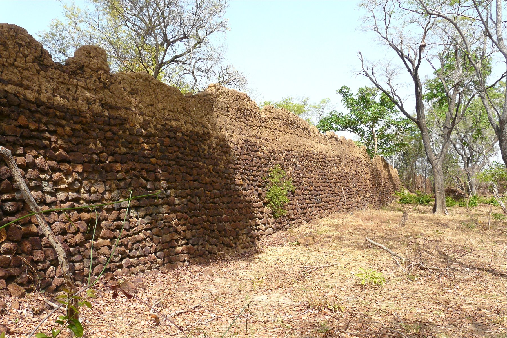
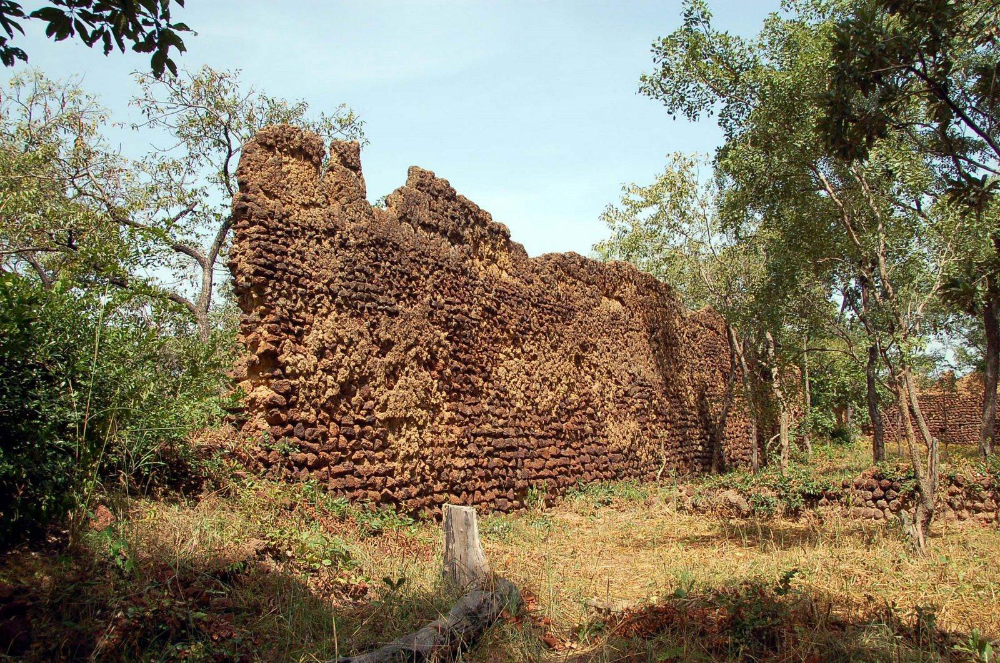
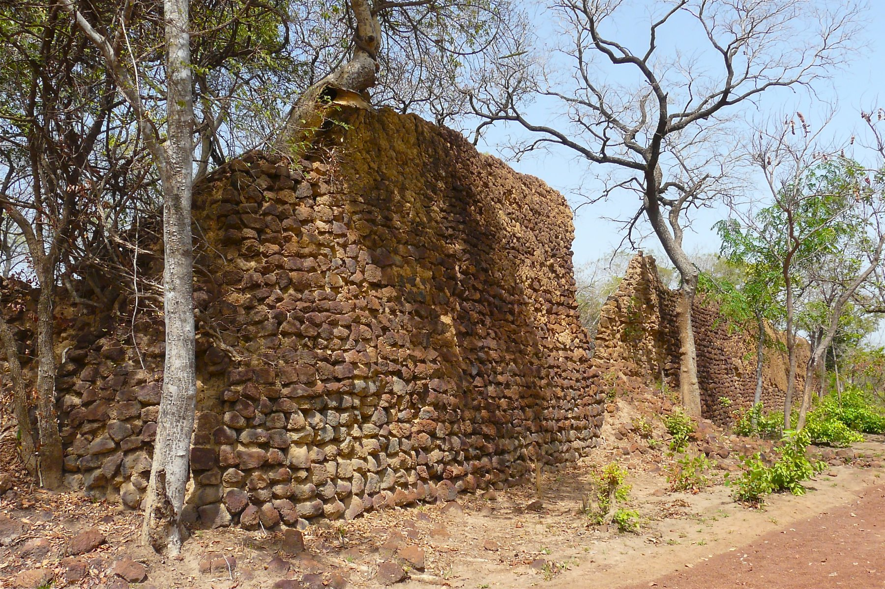

Les Ruines de Loropéni sont situées dans la région du Sud-Ouest du Burkina Faso, près de la ville de Loropéni, dans la province du Poni. Ce site archéologique est le premier du Burkina Faso à avoir été inscrit sur la Liste du patrimoine mondial de l'UNESCO, en juin 2009.

Description du site
Les ruines couvrent une superficie de 11 130 m² et sont entourées de hauts murs en moellons de latérite, atteignant jusqu'à six mètres de hauteur. Ces fortifications sont les mieux conservées parmi une centaine d'enceintes similaires dans la région du Lobi. Le site est accessible aux visiteurs et offre un aperçu fascinant de l'histoire et de l'architecture de la région.
Historique
Les Ruines de Loropéni datent d'au moins 1 000 ans, selon des découvertes récentes. Elles ont été occupées par les peuples Lohron ou Koulango, qui contrôlaient l'extraction et la transformation de l'or dans la région entre le XIVe et le XVIIe siècle.
Le site a été abandonné au début du XIXe siècle. Les Ruines de Loropéni témoignent de l'importance du commerce transsaharien de l'or et de son influence sur les civilisations ouest-africaines.
